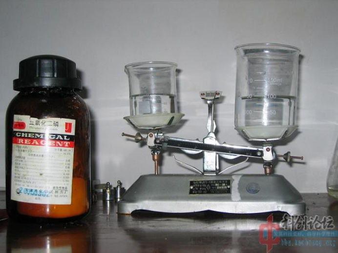
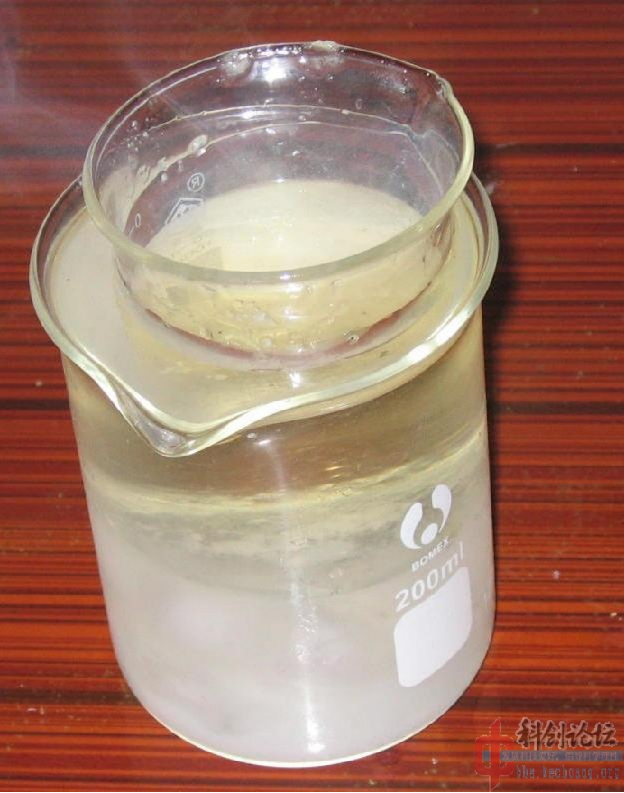
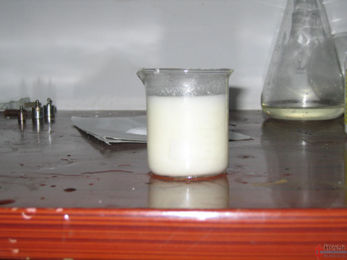
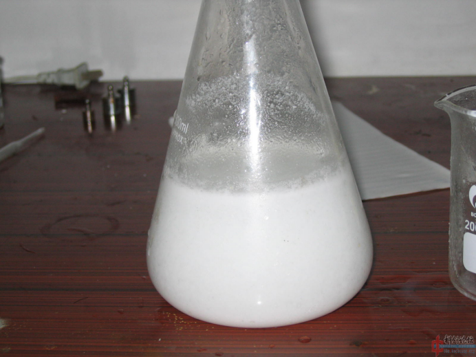

PETN的介绍
季戊四醇四硝酸酯（PETN），也称戊四硝酯、太安、太恩、膨梯尔，是军事和民用领域较常使用的炸药之一，具有热安定性好、威力大的特性，常作为低爆速、低密度炸药敏化剂和直径较小传爆器件的装药使用。
实验部分
警告
硝酸有强腐蚀性 磷酸酐有剧毒
方案
磷酸酐与普通硝酸法制取PETN
所需试剂和仪器
试剂
- 磷酸酐
- 季戊四醇
- 68%硝酸
仪器
- 天平
- 烧杯
- 锥形瓶
步骤
- 配制混酸，往
硝酸里面加入磷酸酐是非常麻烦的事，因为在空气中称量它会有非常大的误差，尤其南风天几乎是拿出来就变水。
所以直接向硝酸中添加磷酸酐，60ml68%的硝酸需要加入60g磷酸酐。
我的天平量程只有100g，所以我要构造一个砝码——往150ml烧杯里面加了95ml水当作砝码，此前先用冰箱把硝酸冷却到0摄氏度以下，在不断搅拌下加入磷酸酐，直至天平平衡，温度上升很快，中间要取出作冷却。  - 加完后得到油状液体，可以看出温度太高，
硝酸少许分解，冷却到10摄氏度。
 - 加入10g粉碎的
季戊四醇后，反应很快，得到一杯半流体。
 - 倒进水里。
 - 剩下过滤了。
总结：这是一个很不实用的方法，而且成本很高，困难较大，要求很好的通风和较快的手脚，纯当试验，和硝硫混酸的一样做出来是极细的粉末状，10g季戊四醇得到20.6gPETN。
这个得率如何？还是不建议用磷酸酐做，建议用无水硝酸镁当吸水剂，可以回收。
备注
如果您遵循本指南的制作流程而发现问题或可以改进的流程，请提出 Issue 或 Pull request 。